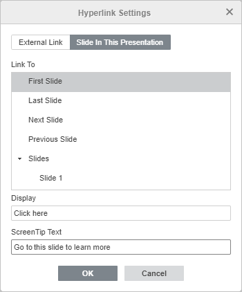

Dodavanje hiperveza
Da biste dodali hipervezу u Uređivaču prezentacija,
- postavite kursor unutar tekstualnog okvira gde treba dodati hipervezу,
- prebacite se na karticu Umetanje na gornjoj traci sa alatkama,
- kliknite na ikonu Hiperveza na gornjoj traci sa alatkama,
- nakon toga će se pojaviti prozor Podešavanja hiperveze u kome možete navesti parametre hiperveze:
- Izaberite tip veze koji želite da umetnete:
-
Koristite opciju Spoljašnja veza i unesite URL u formatu http://www.example.com u polje Veza ka ispod ako treba da dodate hipervezу koja vodi na eksterni veb-sajt. Ako treba da dodate hipervezу ka lokalnoj datoteci, unesite URL u formatu file://path/Presentation.pptx (za Windows) ili file:///path/Presentation.pptx (za MacOS i Linux) u polje Veza ka.
Tip hiperveze file://path/Presentation.pptx ili file:///path/Presentation.pptx može se otvoriti samo u desktop verziji editora. U veb editoru možete samo dodati vezu, bez mogućnosti da je otvorite.

- Koristite opciju Slajd u ovoj prezentaciji i izaberite jednu od opcija ispod ako treba da dodate hipervezу koja vodi na određeni slajd u istoj prezentaciji. Dostupne su sledeće opcije: Sledeći slajd, Prethodni slajd, Prvi slajd, Poslednji slajd, Slajd sa navedenim brojem.

-
Koristite opciju Spoljašnja veza i unesite URL u formatu http://www.example.com u polje Veza ka ispod ako treba da dodate hipervezу koja vodi na eksterni veb-sajt. Ako treba da dodate hipervezу ka lokalnoj datoteci, unesite URL u formatu file://path/Presentation.pptx (za Windows) ili file:///path/Presentation.pptx (za MacOS i Linux) u polje Veza ka.
- Prikaz - unesite tekst koji će biti klikabilan i voditi na veb-adresu/slajd naveden u gornjem polju.
- Tekst oblačića - unesite tekst koji će postati vidljiv u malom iskačućem prozoru sa kratkom napomenom ili oznakom u vezi sa hipervezom na koju se pokazuje.
- Izaberite tip veze koji želite da umetnete:
- Kliknite na dugme U redu.
Da biste dodali hipervezу, možete takođe koristiti kombinaciju tastera Ctrl+K ili kliknuti desnim tasterom miša tamo gde treba dodati hipervezу i izabrati opciju Hiperveza u meniju desnog klika.
Napomena: takođe je moguće izabrati znak, reč ili kombinaciju reči pomoću miša ili koristeći tastaturu i zatim otvoriti prozor Podešavanja hiperveze kao što je opisano iznad. U tom slučaju, polje Prikaz biće popunjeno delom teksta koji ste izabrali.
Prelaskom kursora preko dodate hiperveze, pojaviće se oblačić koji sadrži tekst koji ste naveli. Vezu možete pratiti tako što ćete pritisnuti taster CTRL i kliknuti na vezu u svojoj prezentaciji.
Da biste izmenili ili obrisali dodatu hipervezу, kliknite na nju desnim tasterom miša, izaberite opciju Hiperveza u meniju desnog klika, a zatim radnju koju želite da izvršite - Izmeni hipervezu ili Ukloni hipervezu.